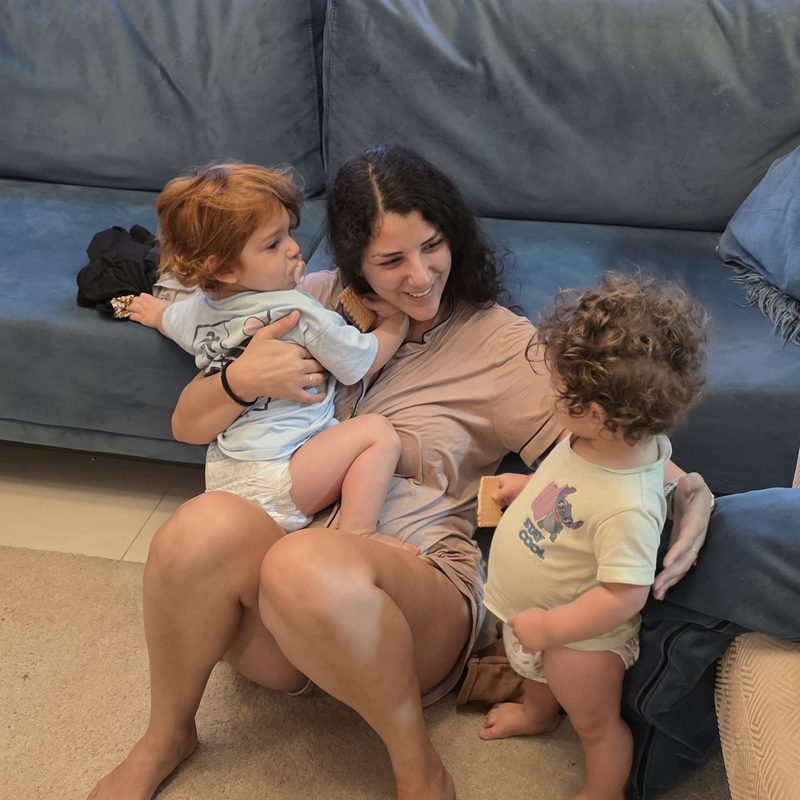

איך מציבים גבול בלי להפוך כל ערב למאבק?
ילד אחד לא מוכן להיכנס למקלחת. השני כבר בפנים ומוציא את כל המים החוצה. אתם לבד, השעה מאוחרת, ושניהם מתנגדים לדבר הבא שצריך לקרות. אתם מבקשים, מסבירים, מתעצבנים, ולפעמים מוותרים רק כדי לעבור את הערב.
כדי לדעת איך להציב גבול שגם תוכלו לעמוד בו, צריך קודם להבין למה ילדים מתנגדים, ולמה זה נעשה מורכב יותר כשיש בבית שני ילדים קטנים.
גם אצלכם זה נראה ככה?
אתם מבקשים פעם אחת, ואז שוב ושוב, עד שהקול עולה.
כל ״לא״ שלכם פוגש מיד בכי, צעקות או ויכוח.
אחד מסרב והשני מצטרף, גם אם קודם בכלל שיתף פעולה.
בסוף אתם עושים במקומם, מוותרים או מאיימים במשהו שלא באמת תרצו לקיים.
אם זה קורה אצלכם, זה לא אומר שאין לכם סמכות או שהילדים ״מנהלים את הבית״. כדי שילדים צעירים ישתפו פעולה, הם צריכים להבין מה עומד לקרות, להצליח לעצור את מה שהם עושים ולהתמודד גם עם העובדה שלא תמיד יקבלו את מה שהם רוצים. אלה יכולות שעדיין מתפתחות.
כמה פעמים ביקשתם הבוקר לנעול נעליים? ומה קרה בין הבקשה הראשונה לרגע שבו כבר הרמתם את הקול?
מה קורה לילד
למה הם לא פשוט מקשיבים?
לפעמים הילד שמע אתכם היטב אבל עדיין לא הצליח לעבור מהקשבה לפעולה. יכול להיות שהוא:
- שקוע במשחק ולא מוכן לעצור.
- מתקשה לעבור לדבר הבא.
- רוצה לעשות משהו בדרך שלו.
- מאוכזב מהתשובה שקיבל.
- עייף, רעב או עמוס.
- עדיין לא מבין מה בדיוק אתם מצפים שיקרה.
שמיעה ושיתוף פעולה אינם אותו הדבר. הילד יכול להבין שהגיע הזמן לכבות את המסך, ובכל זאת להתקשות מאוד להיפרד ממנו.
מאחורי ההתנגדות
למה ה״לא״ חשוב כל כך בגיל הרך?
ילדים צעירים מגלים שהם אנשים נפרדים עם רצונות משלהם. לכן המילה ״לא״ לא תמיד נועדה להילחם בכם. לפעמים זו הדרך של הילד לומר:
- אני רוצה להחליט.
- אני עדיין לא מוכן.
- רציתי שזה יקרה אחרת.
- קשה לי לעצור עכשיו.
- אני רוצה לעשות לבד.
הילד לא צריך לקבל את ההחלטה, אבל כדאי להבין מה עומד מאחורי ההתנגדות לפני שבוחרים איך להגיב.
כשהילד אומר ״לא״: האם הוא מתנגד לגבול, או מתקשה עם הדרך שבה הוא הגיע?
הדפוס
למה אנחנו חוזרים על אותה בקשה שוב ושוב?
- ״בוא להתקלח.״
- ״אמרתי שהולכים להתקלח.״
- ״כמה פעמים אני צריכה לבקש?״
כשבקשה חוזרת פעמים רבות בלי שמשהו משתנה, הילד לומד שאין צורך להגיב בפעם הראשונה. הוא מחכה לרגע שבו הקול עולה או שבו ההורה מגיע ופועל. בינתיים, גם התסכול שלכם עולה.
כך בקשה פשוטה הופכת בהדרגה למאבק. בדרך כלל זה הדפוס שנוצר סביב הרגע הזה, יותר מהחלטה של הילד לא להקשיב.
מה משתנה כשיש שניים
ומה משתנה כשיש ילדים צמודים?
בבית עם שני ילדים קטנים, הגבול אינו פוגש רק ילד אחד.
- אחד מתנגד והשני מיד מצטרף.
- כל ילד זקוק להכנה אחרת.
- בזמן שאתם מדברים עם אחד, השני כבר ממשיך הלאה.
- הגבול שמתאים לבכור לא תמיד מתאים לצעיר.
- לפעמים אתם מוותרים כי אין לכם אפשרות להתמודד עם שתי תגובות יחד.
נניח שהחלטתם שהמסך נגמר. הבכור בוכה ומבקש עוד פרק, ובדיוק אז הצעיר מטפס על השולחן. אתם עוזבים את הגבול כדי לעצור אותו, והבכור מבין שאולי ההחלטה עדיין פתוחה. פשוט הייתם צריכים להיות בשני מקומות באותו הרגע.
הרבה פעמים הוויתור על הגבול מגיע פשוט כי אין עוד ידיים.
על הבכי
האם גבול טוב אמור למנוע בכי?
כשאתם אומרים ״לא״ והילד מתחיל לבכות, האם אתם מיד מרגישים שאולי הייתם קשוחים מדי? הבכי שלו לא בהכרח אומר שהגבול היה לא נכון.
ילדים יכולים לבכות, לכעוס ולהתנגד גם כשהגבול ברור, מתאים וחשוב. לפעמים הבכי הוא פשוט הדרך של הילד להתמודד עם אכזבה, כעס או קושי לעצור משהו שרצה להמשיך בו.
המטרה היא שהילד יוכל להישען עליכם גם כשהתשובה שלכם אינה התשובה שרצה לקבל.
גבול וחיבור
גבול וחיבור אינם סותרים זה את זה
הורות מובילה היא היכולת להבין את הילד, להציב גבול ברור ולהישאר יציבים גם כשהוא לא מרוצה ממנו.
- אפשר לומר ״לא״ ועדיין לתת מקום לכעס.
- אפשר לתת מקום לבכי ועדיין לכבות את המסך.
- אפשר להקשיב לרצון שלו ועדיין להחליט שהגיע הזמן לצאת.
- ואפשר להחזיק את הגבול בלי לצעוק, לאיים או לשכנע שוב ושוב.
חיבור אינו אומר שהילד תמיד מקבל את מה שהוא רוצה. גבול אינו אומר שצריך להיות קרים או קשוחים.
אבל ב״הורות בדאבל״ זה מורכב עוד יותר: לפעמים ילד אחד זקוק לגבול, והשני כבר מגיב לבכי, מצטרף להתנגדות או דורש את תשומת הלב שלכם. לכן לא מספיק לדעת מה לומר, צריך לדעת איך להחזיק את הרגע כולו.
הילד לא חייב לאהוב את הגבול כדי להרגיש בטוח בתוכו.
מה שאני רואה
למה קשה לנו כל כך להישאר בגבול?
לפעמים הקושי הוא להתמודד עם התגובה לגבול, יותר מלדעת מהו הגבול. אנחנו מוותרים כי:
- הבכי מרגיש לנו כמו סימן שפגענו בילד.
- אין לנו כוח לעוד מאבק בסוף היום.
- אנחנו חוששים שהאח השני יצטרף.
- כל אחד מההורים מגיב אחרת.
- לא החלטנו מראש מה באמת חשוב לנו.
- אמרנו ״לא״ מהר מדי, ואז גילינו שאיננו רוצים לעמוד בו.
לא צריך להציב גבול על כל דבר. כשברור לכם על מה חשוב לשמור ועל מה אפשר להתגמש, קל יותר להיות ברורים גם מול הילדים.
על מה אתם אומרים ״לא״ בבית רק כי כבר התחלתם להתעקש? ועל איזה גבול באמת חשוב לכם לשמור?
הבנתם למה הילד מתנגד. אבל איך מגיבים?
- איך אומרים את הגבול כך שיהיה ברור?
- איך מציעים בחירה בלי להעביר לילד את ההחלטה?
- מה עושים כשהוא עדיין מסרב?
- ואיך נשארים בגבול כשהאח השני כבר מתחיל לבכות?
רוצים לדעת איך להציב את הגבול בפועל, מה לומר ואיך להגיב כשההתנגדות מתחילה? המדריך הדיגיטלי:
״גבולות מתוך חיבור״
יעזור לכם להפוך את ההבנה לדרך שאפשר ליישם ברגעים היומיומיים בבית. זהו מדריך מעשי להורים שרוצים להציב גבולות ברורים, להפחית מאבקי כוח ולבנות יותר שיתוף פעולה בלי לוותר על הקשר עם הילדים.
אני רוצה להציב גבולות מתוך חיבורמה תלמדו במדריך?
לבחור את הגבולות שחשובים לכם
איך להבדיל בין גבול שחשוב לשמור עליו לבין מצב שבו אפשר להתגמש בלי לאבד את הסמכות ההורית.
להציב את הגבול בצורה ברורה
איך לעבור מבקשות שחוזרות שוב ושוב למסר קצר שהילד יכול להבין.
להכין את הילד מראש
איך להפחית חלק מהמאבקים סביב כיבוי מסך, מקלחת, יציאה מהבית ושינויים בשגרה.
לתת בחירה בלי לוותר על הגבול
איך לאפשר לילד להשפיע על הדרך, בזמן שההחלטה עצמה נשארת אצלכם.
להגיב להתנגדות
מה לומר ומה לעשות כשהילד בוכה, כועס, מתווכח או מסרב לשתף פעולה.
להציב גבול לשני ילדים יחד
איך לפעול כשההתנגדות של אחד גוררת גם את השני וכשכל ילד זקוק למשהו אחר.
ליצור דרך משותפת בבית
איך לבנות גבולות ששני ההורים מבינים ויכולים ליישם באופן דומה.
לא רק מה לומר אלא מה עושים אחר כך
- קל לומר: ״המסך נגמר.״
- הרגע המורכב מתחיל כשהילד עונה: ״לא!״
במדריך תלמדו לא רק איך לנסח את הגבול, אלא גם איך לפעול כשהילד אינו מקבל אותו מיד. כי גבול אינו רק המשפט שאמרנו. הוא גם מה שאנחנו עושים אחריו.
כלים שאפשר לחזור אליהם ברגע האמת
בתוך המדריך מחכים לכם:
- מערכת הרמזור לתעדוף גבולות.
- דרך לבניית חוקי הבית.
- כלים להכנה מראש.
- בחירות שמתאימות לגיל הילד.
- משפטים קצרים למצבים נפוצים.
- דוגמאות מהחיים כמו מסכים, מקלחת, יציאה מהבית ושעת הערב.
- התאמות למשפחות עם שני ילדים קטנים.
הורים מספרים

אם עוד לא הכרנו
שקמה דגרי
אני שקמה דגרי, מדריכת הורים ויועצת שינה מוסמכת לגיל הרך, בוגרת מצטיינת בהכשרות להדרכת הורים ולייעוץ שינה בגישה ההוליסטית, ואמא לצמודים בהפרש של שנה וחודש.
מתוך החיים עם שני קטנטנים והעבודה עם משפחות יצרתי את שיטת ״הורות בדאבל״, דרך שעוזרת להבין מה כל ילד צריך ולדעת איך להגיב גם כששניהם צריכים אתכם יחד.
אני בעלת תואר ראשון במדעי ההתנהגות ותואר שני בייעוץ ארגוני, ומנהלת את קהילת ״אמאל׳ה צמודים״, שבה חברים יותר מ־300 הורים. את ״גבולות מתוך חיבור״ כתבתי מתוך הערבים שבהם המקלחת, המסך והיציאה מהבית הפכו למאבק, אצלי ובבתים של המשפחות שאני מלווה. עוד עליי · הליווי האישי
למי המדריך מתאים?
- להורים לילדים בגיל הרך.
- למי שמבקשים כל דבר שוב ושוב.
- למי שמוצאים את עצמם צועקים, מאיימים או מוותרים.
- להורים שלא תמיד מסכימים ביניהם על הגבולות.
- למי שרוצים יותר שיתוף פעולה בלי עונשים או פרסים.
- למשפחות שבהן ההתנגדות של ילד אחד משפיעה גם על אחיו.
העקרונות במדריך מתאימים גם למשפחות שהילדים בהן אינם צמודים. לצד זאת, הוא נותן מקום מיוחד למצבים שבהם שני ילדים קטנים זקוקים להובלה הורית יחד.
הילדים עדיין יתאכזבו, יתנגדו ולפעמים גם יבכו
גם אחרי שתציבו גבולות בצורה ברורה. המטרה היא שתדעו:
- על מה חשוב להתעקש.
- איך לומר את הגבול.
- איך לפעול כשהילד מסרב.
- מתי אפשר להתגמש.
- איך לשמור על הקשר גם בתוך ה״לא״.
הילד עדיין יבדוק את הגבול. ההבדל הוא שאתם תדעו איך לעמוד בו.
שאלות נפוצות
למה הילד שלי מקשיב בגן אבל לא בבית?
בגן יש סדר קבוע, ציפיות שחוזרות על עצמן וקבוצה שפועלת יחד. בבית הילד גם מרגיש חופשי יותר להביע קושי ולהתנגד. זה לא בהכרח אומר שהוא מכבד את הצוות יותר או שאתם עושים משהו לא נכון.
האם לתת בחירה לא מחליש את הגבול?
לא, כאשר הבחירה ניתנת בתוך מסגרת שההורה קבע. הילד יכול לבחור איזו פיג׳מה ללבוש, אבל לא אם הולכים לישון. במדריך תלמדו להבדיל בין בחירה בדרך לבין העברת ההחלטה לילד.
מה עושים אם הילד בוכה בגלל הגבול?
בכי אינו מחייב אתכם לחזור בכם. אפשר להישאר ליד הילד, לתת מקום לאכזבה ובמקביל לשמור על ההחלטה. המדריך מפרט איך לעשות זאת בפועל.
ומה אם אמרנו ״לא״ ואז הבנו שאפשר להתגמש?
מותר לשנות החלטה. עדיף לומר בפשטות שחשבתם שוב והחלטתם אחרת, במקום להציג את השינוי כאילו הילד ניצח במאבק. סמכות הורית אינה דורשת מכם לא לטעות או לא לשנות את דעתכם.
אנחנו שני הורים עם גישות שונות. האם המדריך מתאים לנו?
כן. המדריך יכול לעזור לכם להבין אילו גבולות באמת חשובים לשניכם ולבנות שפה משותפת. המטרה היא שהילדים יפגשו מסגרת ברורה ששניכם יכולים לעמוד בה, גם אם אתם לא הורים זהים.
האם המדריך מתאים רק לילדים צמודים?
לא. הוא מתאים להורים לילדים בגיל הרך, ובנוסף מתייחס למצבים הייחודיים שבהם שני ילדים קטנים מתנגדים או זקוקים להורה באותו הזמן.
האם המדריך מתאים לכל גיל?
המדריך מיועד בעיקר להורים לילדים בגיל הרך. את הדרך שבה מציבים את הגבול ואת הבחירות שנותנים צריך להתאים לגיל וליכולת של הילד.
שניהם רוצים את אותו הצעצוע. האם להתערב?
כשאחד הילדים חוטף, מכה או אינו מסוגל עדיין להגן על עצמו, כדאי להתערב ולעצור את הפגיעה. אין צורך לקבוע מי הילד הטוב ומי התחיל; אפשר לתאר את הבעיה, לשמור על הגבול ולעזור להם למצוא דרך לחכות, להתחלף או לבחור אפשרות אחרת.
אין לי זמן לקרוא מדריך ארוך. האם צריך לקרוא הכול ברצף?
לא. תוכלו להתחיל מהנושא שהכי מעסיק אתכם ולחזור לחלקים אחרים לפי הצורך. עדיף לבחור שינוי אחד, לנסות אותו בבית ורק אחר כך להמשיך לכלי הבא.
איך מקבלים את המדריך?
לאחר הרכישה תישלח אליכם גישה אישית לצפייה במדריך באמצעות כתובת הדוא״ל שמסרתם.
ומה אם הגבולות הם רק חלק ממה שקורה אצלנו?
אם הקושי חוזר בכמה תחומים, אם כל אחד מהילדים מגיב אחרת או אם ניסיתם כלים והם אינם מחזיקים, יכול להיות שליווי אישי יתאים יותר.
רוצים להפסיק לחזור על אותה בקשה שוב ושוב?
״גבולות מתוך חיבור״ יעזור לכם לדעת אילו גבולות חשוב להציב, איך לומר אותם ומה לעשות כשהילד עדיין מתנגד, גם כשיש בבית שני ילדים קטנים וכל אחד מגיב אחרת. המדריך הדיגיטלי המלא:
99 ₪ אני רוצה להציב גבולות מתוך חיבורהגישה נשלחת באופן אישי, בדרך כלל בתוך זמן קצר בשעות הפעילות ולא יאוחר מיום עסקים אחד.
הגישה ניתנת לצפייה באמצעות כתובת הדוא״ל שאושרה ב־Google Drive. המדריך אינו ניתן להורדה או להעברה.
בלחיצה על כפתור הרכישה אתם מאשרים שקראתם והסכמתם לתנאי השימוש, הרכישה, האספקה והביטולים ולמדיניות הפרטיות.